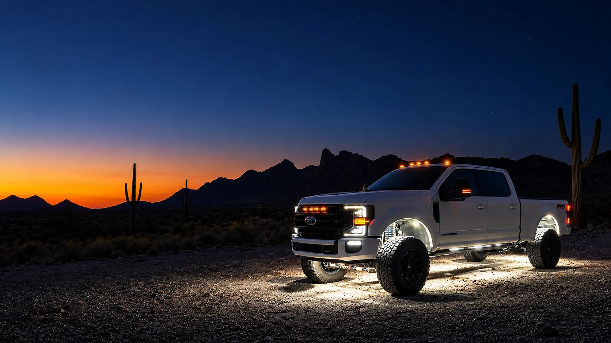
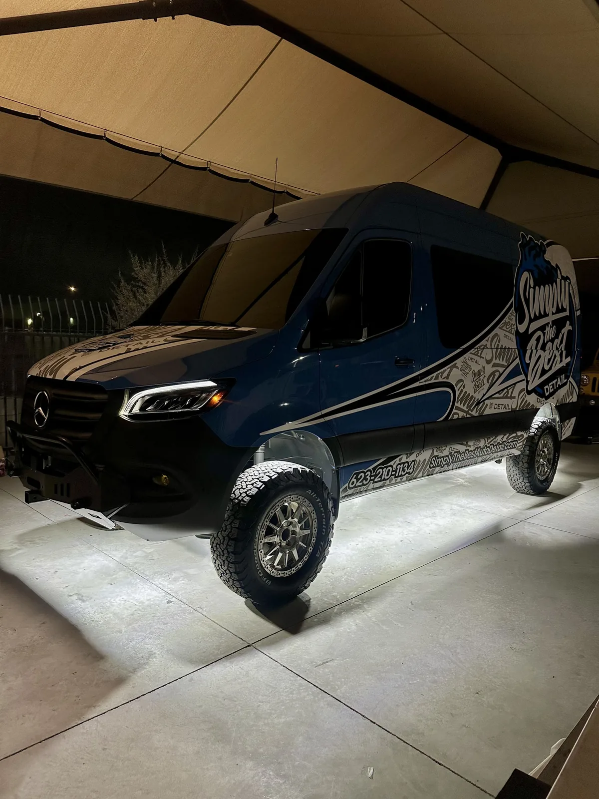
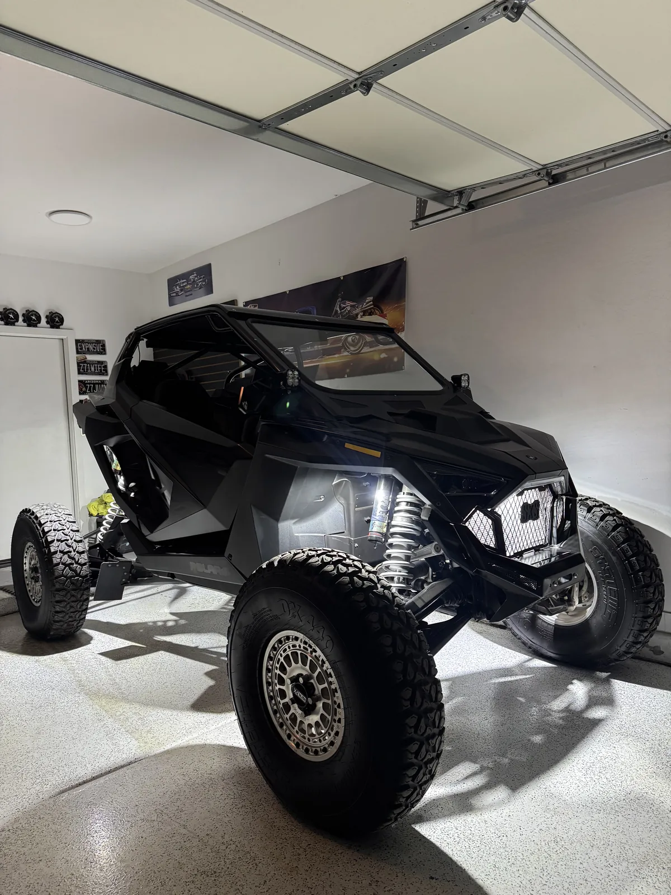
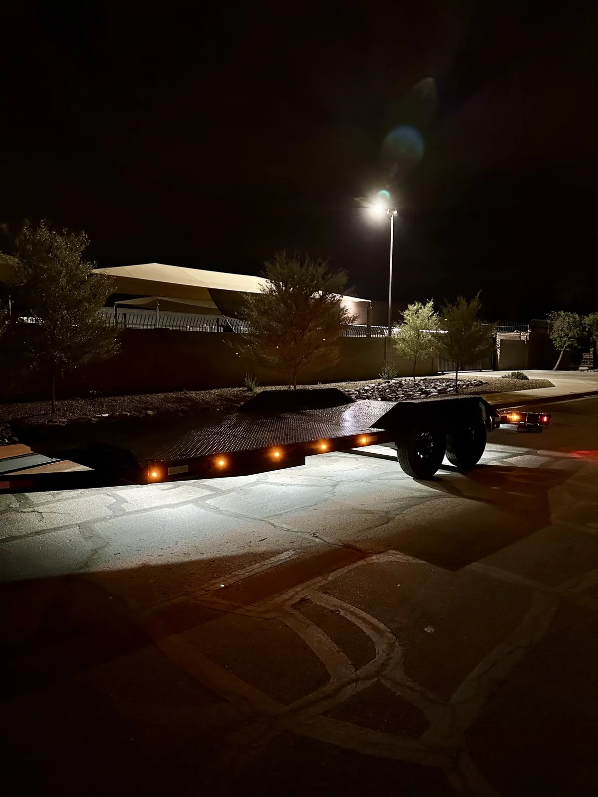

Truck LED Lighting · Mesa, AZ
Truck LED Lighting, From The Wheel Wells To The Roof
We light pickups from the ground up: rock lights underneath, rings behind the wheels, cab and pillar lights up top. Everything here we sell, install, or both, at our shop in Mesa.
5.0★ from 33 reviews · installed in Mesa · kits ship anywhere
- Under The Truck
- Rock lights, underglow
- Around The Wheels
- 5 and 10-row rings
- Up Top
- Cab and pillar lights

Everything We Put On A Truck
Each of these has its own page with the lights, the prices and the photos.
Where Each Light Goes On A Pickup
Think about a truck in three zones. Under the truck, rock lights light the ground and give the glow people notice. At the wheels, rings mounted behind the wheel light it from the inside out, and two rock lights in each wheel well light the tire. Up top, cab lights and A-pillar lights handle the roofline and the area beside the truck.
Most builds start underneath and work up. Paul came to the shop for rock lights first, then came back for pillar lights.
White, Amber Or Color
Color is the decision that matters most, because of how Arizona treats it on the road.
| Color | Our lights | On the road in Arizona |
|---|---|---|
| Pure white | 72, 84 and 219-chip rock lights, wheel lights | Fine facing any direction |
| Amber | Switchback kit | Fine facing forward. Flashing modes are for parked |
| Red, blue, green | RGBW kit | Not visible from the front while driving. Parked and show use |
Summary of A.R.S. 28-947. Full details on our underglow page.
Plug And Play Or DIY
Our RGBW, switchback and wheel light kits are full plug and play, with a module, a remote and a Bluetooth app, and they're waterproof. Our 72 and 84-chip pure white packs are DIY wiring. Either way, the shop installs all of it.
Lighting More Than Trucks
Most of what comes through the shop is a pickup, but the same lights go on Jeeps, side-by-sides, vans and cars. Our lights have gone on a Sprinter van, a RZR and a trailer.



Wired Right On Every Install
Every light we put on a vehicle gets the same four things. None of them are extras, and none of them depend on who's working that day.
- Fused, every circuit
- Each circuit gets its own fuse, so a short pops a fuse instead of cooking the wiring or the light.
- Heat-sealed connections
- Every splice is sealed against Arizona heat, monsoon water and the pressure washer.
- Your lights or ours
- Bring a kit you bought from us or one you bought somewhere else, or we supply the lights.
- Tested before you leave
- We turn on every light with you at pickup, so you see it working before you drive away.
How An Install Works At Our Mesa Shop
- Book a drop-offPick the work, your vehicle and a drop-off day and time. Booking is free and takes about a minute.
- We text you to confirmYou get the slot and your install quote by text before anything is done. Labor depends on your vehicle and how many lights you want.
- Drop it off in MesaDrop-off is by appointment, Monday to Saturday, 9 to 4:30. The address comes with your confirmation.
- Pick it up litWe walk you through every light and the controls, then you drive home with it.
Builds From Our Customers


Truck Lighting Questions
What LED lights can you put on a truck?
We install rock lights, wheel lights, switchback amber lights, RGBW color underglow, cab lights, A-pillar lights and mirror lights, plus repairs on lighting you already have.
Do you sell the lights or just install them?
Both. We make our own rock lights and wheel lights, and we install those or lights you bring in.
Can I keep my LED lights on while driving?
White is fine. Arizona doesn't allow red or blue visible from the front on a highway, and flashing lights are only allowed in a few cases. Keep colors and strobe modes for when you're parked.
Do you do work on side-by-sides and Jeeps?
Yes. Anything with a frame to mount to can run our lights.